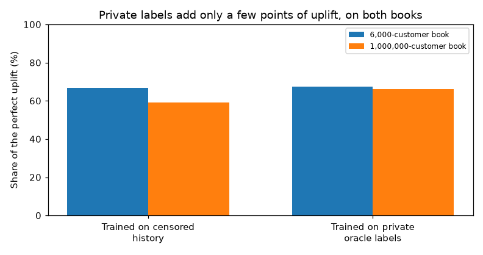
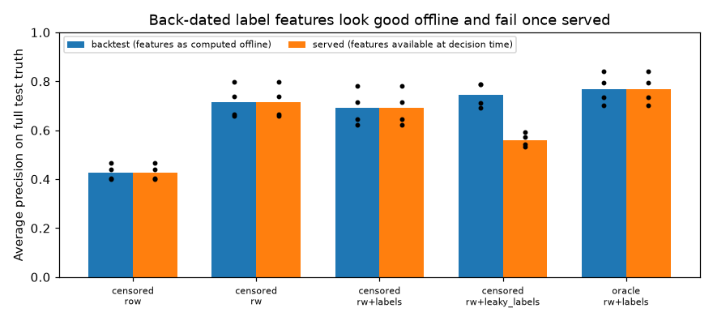
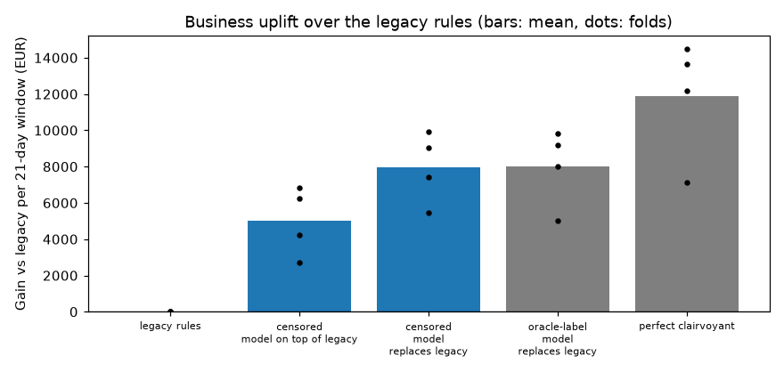

Shared payment-platform fraud simulator
An educational simulator of card-not-present payments on one platform. A legacy rule engine is already deployed. Labels arrive late, cover only some attempts, and are censored by the engine's own declines. A skrub pipeline with point-in-time window features and HistGradientBoostingClassifier is backtested on calendar folds and scored in euros against the simulator's private truth.
The teaching book has 6,000 customers and runs in about 20 seconds. The production-scale book has 1,000,000 registered customers (123,000 active), 200 shops and about 7,400 attempts a day, and the same backtest runs in about 90 seconds.
Highlight plots
Private labels add only a few points of the attainable uplift. Replacing the legacy rules matters more than training on the simulator's hidden truth. On the million-customer book the censored model keeps 59% of the perfect uplift and the oracle model 66%.

Back-dating fraud labels to the payment time makes a feature look better in an offline backtest. Served with only the labels that have arrived, that feature loses 0.07 to 0.23 average precision.

On the 6,000-customer book the euro gap between censored and oracle training is invisible. Fold-level gains are the dots.

Code entry points
Links open the experiment sources on the cursor/fraud-platform-simulator-06f6 branch.
| Piece | Where to start |
|---|---|
| Customer book, fraud campaigns, legacy rules, delayed feedback | mature_config and simulate |
| Window aggregates that cannot see the current attempt | add_window_features |
| Label aggregates, and the back-dated twin used to measure leakage | arrived_label_count |
| Which labels exist at a retraining cutoff | label_as_known_at |
| skrub feature store and the cutoff-aware learner | feature_store_dataop and learner_dataop |
Calendar backtest via skrub.cross_validate |
backtest |
| Approve / decline / review gain and the decision rule | decide and realised_gain |
| Runs that produce the plots above | 003, 004, 005 |
Findings
| Question | Answer | Iteration |
|---|---|---|
| Do window aggregates matter? | Yes. On the small book, AP 0.43 → 0.72 (legacy rule score alone: 0.11). | 003 |
| Do label features help despite the delay? | Not when they respect arrival time. They cost 0.015–0.044 AP in every fold. | 003 |
| What does back-dating labels do? | It can win offline, then loses 0.07–0.23 AP once served. | 003 |
| How much ranking quality does censoring cost? | 0.06–0.11 AP on the small book; about 0.08 AP on the million-customer book, with a wide fold spread. | 003, 005 |
| How much money does censoring cost? | Nothing measurable on the small book (€32.0k vs €31.8k). On the large book, €7.9k of a €66k uplift, mostly one fold (59% vs 66% of the perfect uplift). | 004, 005 |
| How wrong is evaluation on observable labels? | It underestimates the uplift by 26% on the small book and 31% on the large one. | 004, 005 |
| Replace the rules or layer the model on top? | Replacing wins on both books (€11.7k and about €32k), and only the simulation can show that approving some legacy declines is safe. | 004, 005 |
Iterations
- 001 — first simulator (superseded: fraud was trivially separable)
- 002 — critical review and the mechanistic simulator
- 003 — skrub DataOps, lag-aware label features and leakage
- 004 — business evaluation on the 6,000-customer book
- 005 — the same comparison on a 1,000,000-customer book
Reproduce
cd experiments/fraud_platform
pixi run test # point-in-time, censoring, gain matrix, dormant book
pixi run iter004 # small book, about 20 s
pixi run iter005 # million-customer book, about 90 sEvent logs (transactions.csv.gz, transactions.parquet) are produced by those runs and gitignored. The publisher checks out markdown, plots, and the small summary tables only.